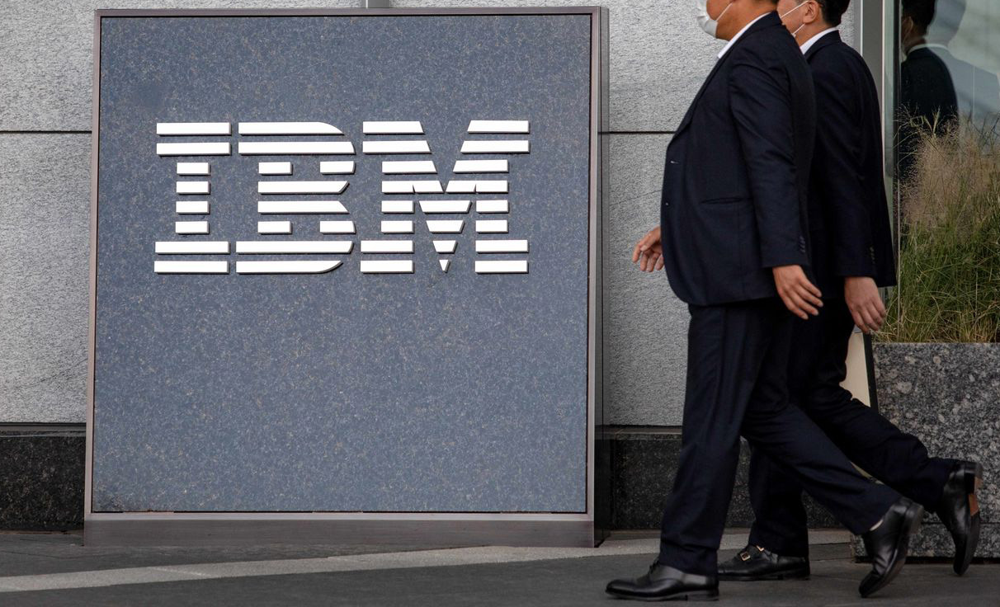
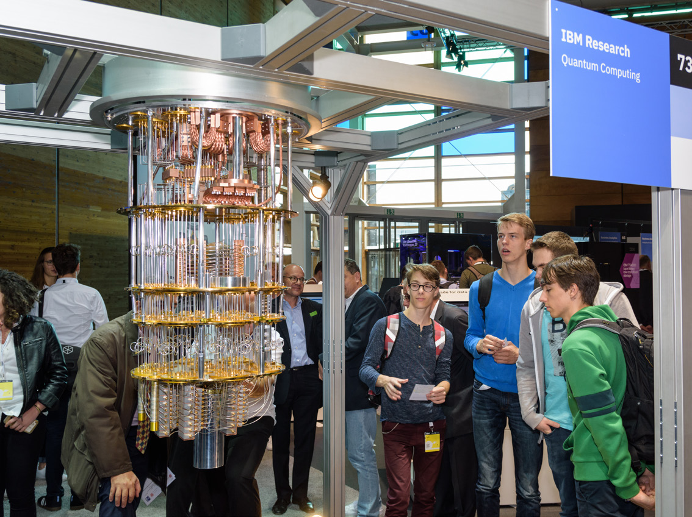
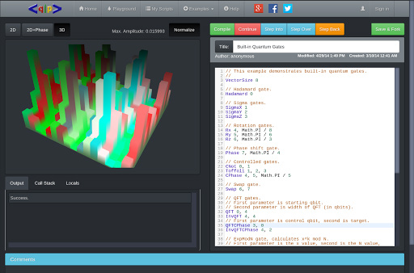
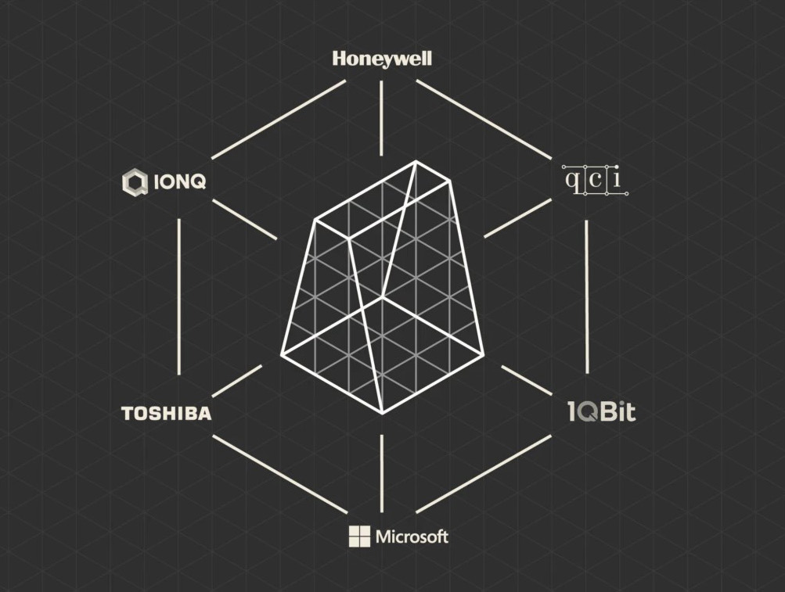

For most of computing history, getting time on a leading-edge machine meant physical access: a badge, a raised floor, a cold room full of racks. Quantum computing skipped that step almost entirely. The hardware still lives in a handful of carefully controlled laboratories, cooled to a fraction of a degree above absolute zero or trapping ions in ultra-high vacuum, but you do not have to be anywhere near it to use it. You reach it the same way you reach any other cloud service: over the internet, through an account, with a few lines of code.
That is the single most important practical fact about quantum computing today. You, reading this, can run a real quantum circuit on a real quantum processor this afternoon, often for free. This chapter is a map of how to do that. We cover why cloud access became the dominant model, who the major providers are as of 2026, the software stacks you write programs in, and a concrete path to getting hands-on. The hardware and the business are moving fast, so treat specific numbers, plan names, and processor generations as a snapshot. The structure of the ecosystem, the part worth learning, is far more stable than any single product page.
A quantum processor is a finicky, expensive, shared instrument. A superconducting machine needs a dilution refrigerator the size of a small car and a room of supporting electronics. A trapped-ion or neutral-atom machine needs lasers, vacuum systems, and precision optics. Nobody is going to put one on your desk, and for the foreseeable future nobody needs to. The cloud model fits quantum hardware almost perfectly, because quantum work is naturally bursty. You spend most of your time thinking, writing, and simulating on a classical computer, then send a compact description of a circuit to the quantum machine, which runs it many times in milliseconds and returns a set of measurement outcomes. The quantum processor is busy for a tiny fraction of your total working time, so sharing it across thousands of users is both economical and technically sensible.
This is why access is genuinely global and genuinely open. Several companies provide their machines over the internet, each wrapped in documentation, tutorials, and a community. You do not need an institutional affiliation, a grant, or a purchase order to start. Whether you want to retool a career, prototype an algorithm for your company, or simply see what a Bell state looks like when measured ten thousand times, the on-ramp is a web browser and a free account.
It helps to be precise about what "running on a quantum computer" means in 2026, because the marketing can blur it. There are three different things you can run against, and knowing which one you are using matters:
The practical workflow blends all three. You design and debug on a simulator, where iteration is instant and free, then submit the finished circuit to real hardware when you need a result that reflects an actual machine. Cloud platforms make switching between a simulator and a QPU as simple as changing one line that names the backend.

The original example, and still the canonical one, is IBM. In 2016 IBM put a small quantum processor on the public cloud and let anyone use it, an unusual move for frontier hardware. The result was a community that grew into hundreds of thousands of registered users running enormous numbers of circuits per day across IBM's fleet of machines and simulators, all programmed through IBM's open-source Qiskit software. That template, free entry-level access plus a rich library of learning material plus a paid tier for serious workloads, became the model everyone else followed.

The other thing the providers all figured out early is that building a community is not charity, it is strategy. A field this young is bottlenecked on people who know how to use it. Free access, hackathon-style challenges, open textbooks, and active forums are how every serious player recruits the researchers, developers, and future employees the whole industry depends on. When IBM ran a four-day global challenge in 2020, the participants who solved the problems were not all physicists. The roster included students, teachers, lawyers, software consultants, data scientists, and high-school kids. That breadth is the point. The on-ramp is deliberately wide, and you are exactly who it was built for.
Going Deeper - Why doubling qubits breaks classical simulation
A quantum state of n qubits is described by 2 to the power n complex numbers, called amplitudes. One qubit needs 2 numbers, ten qubits need 1,024, thirty qubits need over a billion, and fifty qubits need more than a quadrillion. Each is a complex number taking roughly 16 bytes, so a 50-qubit state is on the order of 18 petabytes, beyond any single machine. This exponential wall is precisely why quantum computers are interesting (they sidestep it physically) and precisely why simulators cannot replace real hardware past a few dozen qubits. It is also why providers invest in real QPUs rather than just bigger simulators.
Four ecosystems dominate access as of 2026: IBM Quantum, Amazon Braket, Microsoft Azure Quantum, and Google Quantum AI. They split into two business models. IBM and Google are vertically integrated: they build their own hardware and offer it directly. Amazon and Microsoft are aggregators: they build little or no general-purpose QPU hardware of their own and instead sell access to a marketplace of partner machines, the way a cloud provider resells compute. Both models have merits, and serious users often hold accounts on more than one. The details below are current to 2026 and should be verified before publication, because plans, processor names, and pricing change every few months.
IBM remains the largest provider of public access. In 2025 IBM consolidated its services onto a new enterprise-grade platform (the older quantum-computing.ibm.com site was retired in mid-2025), and even free "Open Plan" users now get time on a current-generation Heron processor with tunable couplers, the architecture that gives IBM's machines their low two-qubit error rates [1]. Paid plans buy dedicated and priority access for production workloads. IBM has also published an aggressive public roadmap aimed at a large-scale, fault-tolerant machine by 2029, with intermediate processors such as Nighthawk (around 120 qubits, delivered to users at the end of 2025) and the experimental Loon chip demonstrating fault-tolerant building blocks [2]. Everything is programmed through Qiskit, and IBM pairs the platform with the long-running open Qiskit learning materials. If you want the deepest free on-ramp and the most third-party tutorials, IBM is the conventional starting point.
Braket is AWS's managed quantum service and the clearest example of the aggregator model. You do not get Amazon-built qubits; you get a single console, API, and SDK that reach a curated menu of partner hardware: trapped-ion systems from IonQ, superconducting machines from Rigetti, and neutral-atom machines from QuEra, among others, alongside high-performance classical simulators [3]. Pricing is pay-as-you-go, typically a per-task charge plus a per-shot charge that varies by device, with the simulators billed by the second. Braket's strengths are integration with the rest of AWS (storage, classical compute, notebooks) and the ability to compare different qubit technologies without learning a different interface for each vendor. It suits teams already living in AWS and researchers who want to benchmark hardware families side by side.
A note on D-Wave, pictured above, because it does not fit neatly into the gate-model story. D-Wave's Leap service offers cloud access to a quantum annealer, a fundamentally different kind of machine specialized for optimization problems rather than the universal gate-model circuits the other providers run. Annealers have many more physical qubits but are not general-purpose quantum computers. Leap was an early innovator in the access model itself, offering free metered QPU time and the open-source Ocean Python SDK, and it remains the go-to platform if your problem is naturally an optimization. Just keep the distinction clear: an annealer and a gate-model QPU solve different classes of problem.
Azure Quantum is Microsoft's aggregator platform, integrated into the broader Azure cloud. Like Braket, it offers a single interface to partner hardware (trapped-ion systems from IonQ and Quantinuum, neutral-atom systems from PASQAL, and others) plus simulators [4]. Microsoft layers on its own software identity: the Q# language and the Quantum Development Kit, which integrate with Visual Studio Code and .NET workflows, and the platform also accepts Qiskit. Microsoft is additionally pursuing its own topological-qubit hardware (the Majorana line), a longer-horizon bet distinct from the partner machines it resells today. Pricing is pay-as-you-go with free entry-level credits. Azure Quantum is a natural fit for organizations already standardized on Microsoft tooling.

Google is vertically integrated like IBM but takes a more research-forward, less retail posture. Google builds its own superconducting processors (the Sycamore and Willow lines) and is best known for landmark experiments in random-circuit sampling and, more recently, in quantum error correction, where its Willow chip demonstrated that adding more physical qubits to an error-correcting code can lower the logical error rate, a key milestone on the road to fault tolerance. Google's primary software contribution to the broader community is Cirq, its open-source Python framework, which is widely used for hardware-specific and error-correction research. Direct cloud access to Google's newest machines is more gated than IBM's open plan, oriented toward research collaborations, but Cirq itself is free and runs against simulators and other backends.
Going Deeper - Gate-model versus annealing
Almost everything in this book describes gate-model quantum computing: you build circuits from quantum gates, and in principle these machines are universal, able to run any quantum algorithm including Shor's and Grover's. A quantum annealer (D-Wave's specialty) is not universal. It physically relaxes a system of qubits toward the lowest-energy configuration of a problem you encode, which makes it a targeted tool for optimization and sampling. Annealers reached large physical-qubit counts years before gate-model machines, but a 5,000-qubit annealer and a 150-qubit gate-model processor are not comparable numbers. They are different machines for different jobs.
Hardware is reached through software, and in quantum computing the software has standardized faster than the hardware. Almost everything is written in Python, almost everything is open source, and a handful of frameworks cover the vast majority of real work. You write a circuit in one of these SDKs, the SDK transpiles it (rewrites it into the specific gate set and qubit connectivity of your chosen backend), submits it to a simulator or QPU, and collects the measurement results. Learning one framework well teaches you concepts that transfer to all of them.
The major frameworks as of 2026, all actively maintained, are:
A useful way to choose: pick Qiskit to learn and for the largest ecosystem, Cirq for hardware and error-correction research, PennyLane for anything involving machine learning or optimization with gradients, Q# if your world is already Microsoft, and a vendor SDK or tket when you need to target specific hardware or wring out every bit of performance. The frameworks are converging on common ideas, so the second one you learn comes quickly.
Going Deeper - What transpilation actually does
Real machines do not implement every gate you might write, and their qubits are not all physically connected to each other. Transpilation (also called compilation) is the step that rewrites your idealized circuit into one the target device can actually run: substituting your gates with the device's native gate set, and inserting extra operations (notably SWAP gates) to move quantum information between qubits that are not directly coupled. Because every inserted gate adds noise, good transpilation is a major lever on result quality, which is why compiler quality (Qiskit's transpiler, tket) is a real competitive differentiator, not a footnote.
The fastest way to understand quantum computing is to run something. Here is a concrete path from nothing to a result on real hardware, and it costs nothing to start.
Step 1: Pick a platform and make a free account. For most beginners the smoothest start is IBM Quantum with Qiskit, because of the depth of free tutorials and the open-plan access to real hardware. If you live in AWS or Azure already, Braket or Azure Quantum will feel more natural and let you compare hardware vendors. If your interest is optimization, D-Wave Leap's free tier is purpose-built for it.
Step 2: Run your first circuit on a simulator. Do not start on real hardware. Build a tiny circuit (the classic first program puts two qubits into an entangled Bell state) and run it on a free local or cloud simulator. Iteration is instant, and you will see the probabilistic measurement outcomes that make quantum computing feel different from classical code. Most platforms offer a hosted notebook so you do not even install anything locally.
Step 3: Submit the same circuit to a real QPU. Change one line to point at a real backend instead of the simulator, submit, and wait in the queue. When the results come back, compare them to the simulator's clean output. The difference, the unexpected counts, the slightly-wrong probabilities, is real hardware noise. Seeing that contrast firsthand teaches more about the current state of the field than any specification sheet.
Step 4: Work through a structured course. Every major provider offers free, self-paced learning: IBM's Qiskit tutorials and textbook, Microsoft's Quantum Katas, PennyLane's QML demos, and a large body of community videos and notebooks. Pick one and follow it end to end rather than skipping around. These materials assume no prior quantum experience and build from gates to algorithms.
Step 5: Join a community and try a challenge. Forums, Discord and Slack channels, and periodic hackathon-style challenges are where the field actually lives. Challenges in particular are designed for newcomers and give you a deadline, a problem, and people to ask. They are also, not coincidentally, how the providers spot talent.

The ecosystem in Figure 11.6 looks crowded, and it is, but the crowd is the opportunity. No single company owns quantum computing, the major SDKs are open source and increasingly interoperable, and the cloud model means you can experiment with several hardware technologies without buying any of them. The barrier to entry has rarely been lower for a frontier technology. The hardware is genuinely early, the noise is real, and useful commercial advantage is still emerging, but none of that is a reason to wait. The way you build intuition for what these machines can and cannot do is by using them, and you can start today.
BNC in Practice - Where precision instruments meet the quantum stack
Cloud access hides the physics, but the physics does not go away. Behind every QPU is a wall of classical control and measurement electronics: microwave and RF signal generators, precisely timed pulse and trigger sources, low-noise references, and synchronization across many channels. This is the layer Berkeley Nucleonics has served for decades in test, measurement, and timing. Researchers building or characterizing quantum hardware (rather than only renting it over the cloud) still depend on instrument-grade signal generation and timing to drive gates, sequence experiments, and lock everything to a common clock. For specific instrument capabilities and specifications, consult the current BNC datasheet rather than relying on figures quoted here. Verify against current datasheet.
Take it interactively. The quiz lives on its own page with hidden answers - write your attempt first (even four characters works), then reveal. Self-graded. About 10 minutes.
Or read the questions and answers inline below (preserved for print and offline use).
[1] IBM Quantum, "The next evolution of IBM Quantum Platform," IBM Quantum Computing Blog, 2025. Open Plan users gain access to a current-generation Heron QPU with tunable couplers. Verify before publication.
[2] IBM, "IBM Delivers New Quantum Processors, Software, and Algorithm Breakthroughs on Path to Advantage and Fault Tolerance," IBM Newsroom, 12 November 2025 (Nighthawk and Loon processors; fault-tolerance roadmap to 2029). Verify before publication.
[3] Amazon Web Services, "Amazon Braket: supported devices and providers" (IonQ, Rigetti, QuEra, and managed simulators), AWS documentation, accessed 2026. Verify before publication.
[4] Microsoft, "Azure Quantum providers and the Quantum Development Kit / Q#" (IonQ, Quantinuum, PASQAL partner hardware), Microsoft Learn, accessed 2026. Verify before publication.
[5] IBM Quantum, "Qiskit documentation and learning materials," accessed 2026. Verify before publication.
Provider plans, processor generations, qubit counts, and pricing in this chapter reflect a 2026 snapshot and change frequently. Verify all product-specific details before publication.